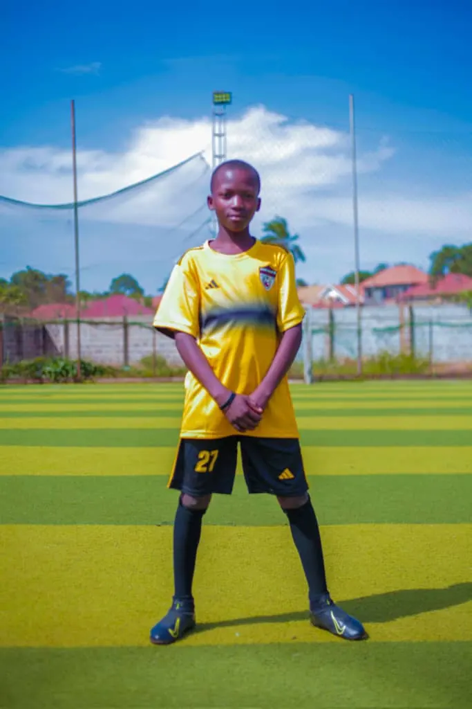

Getting children off the streets
We look for talented children who are living on the street or are out of school, and invite them to train with us. Football is the first thing we offer, because it is the easiest yes a child can give.

Football brings children to us. Then we take care of the rest: a safe place to sleep, food, clothes, school and people who stay.
We look for talented children who are living on the street or are out of school, and invite them to train with us. Football is the first thing we offer, because it is the easiest yes a child can give.
Every child trains with Star Hearts Sports Academy, where coaching follows a four-stage pathway: foundation, development, competition and progression.

Talent on the pitch should open doors in the classroom. We find scholarships and bursaries so children can return to primary and secondary school, and work with partner schools that welcome them.

For talented children with no home to go to, we provide one: a roof over their heads, a bed of their own, and the adults who look after them.

Volunteers and friends of the foundation give food and clothing, so no child trains hungry or goes without something to wear.

Coaches and mentors teach the values on our wall: discipline, respect, time management and responsibility. More than that, they are the people a child can count on.

Through the academy, children with autism and Down syndrome take part in adapted sports programmes, with partners including Down Syndrome Foundation Uganda and Embrace Autism Uganda.

Sponsor a child, give food or clothes, or volunteer your time.